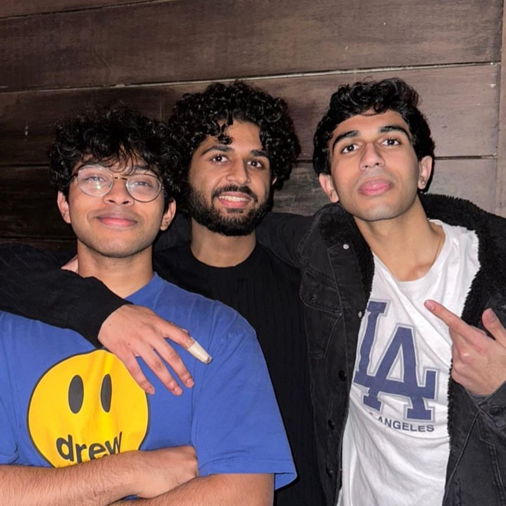

My name is Rishi Heggawadi and I am currently a Junior at SUNY Binghamton, located in Vestal, New York. I am an Economics major, planning to minor in DiDa. I am academically interested in Data Science, but in my free time I like to read philosophy, program, and play basketball.
Python
Javascript
HTML / CSS
Other
Burgers
Pizza
Cookies
Other
Italy
Greece
Japan
Other
As mentioned before, I really enjoy reading philosophy. Here's some quotes that have stuck with me:
To dare is to lose one's footing momentarily. Not to dare is to lose oneself.
- Soren Kierkegaard
The world turns aside to let any man pass who knows where he is going.
- Epictetus
What then is man? Thus we ask the question again. He is a being that always decides what it is. A being that within it at one and the same time the possibility of sinking to the level of an animal or of soaring to a life of near holiness.
- Viktor Frankl
Here's a livestream of lo-fi beats that I often use to study or relax! I hope you enjoyed scrolling through my webpage!